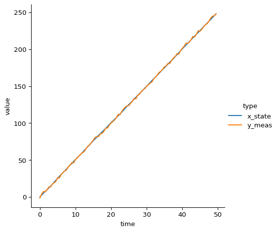
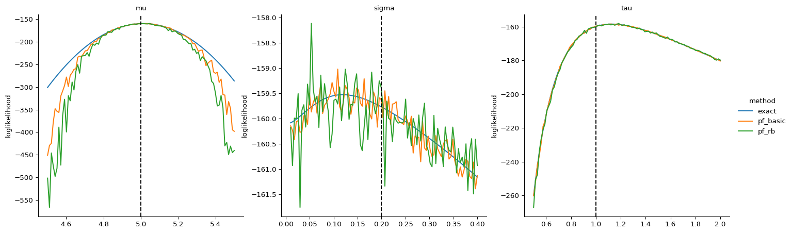
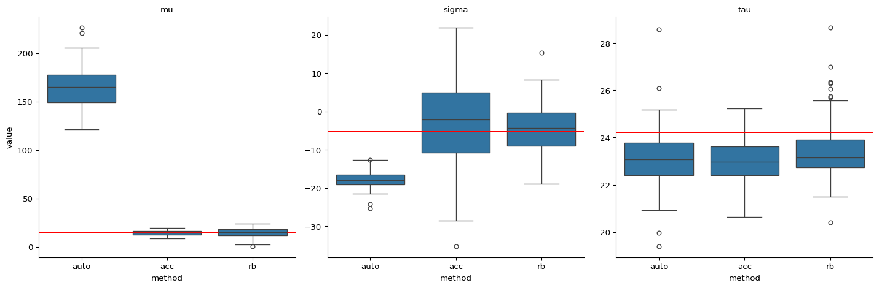
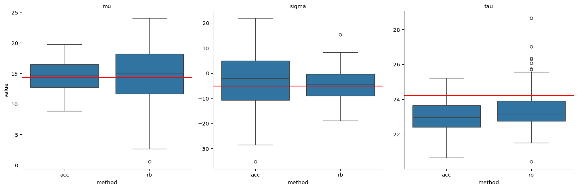
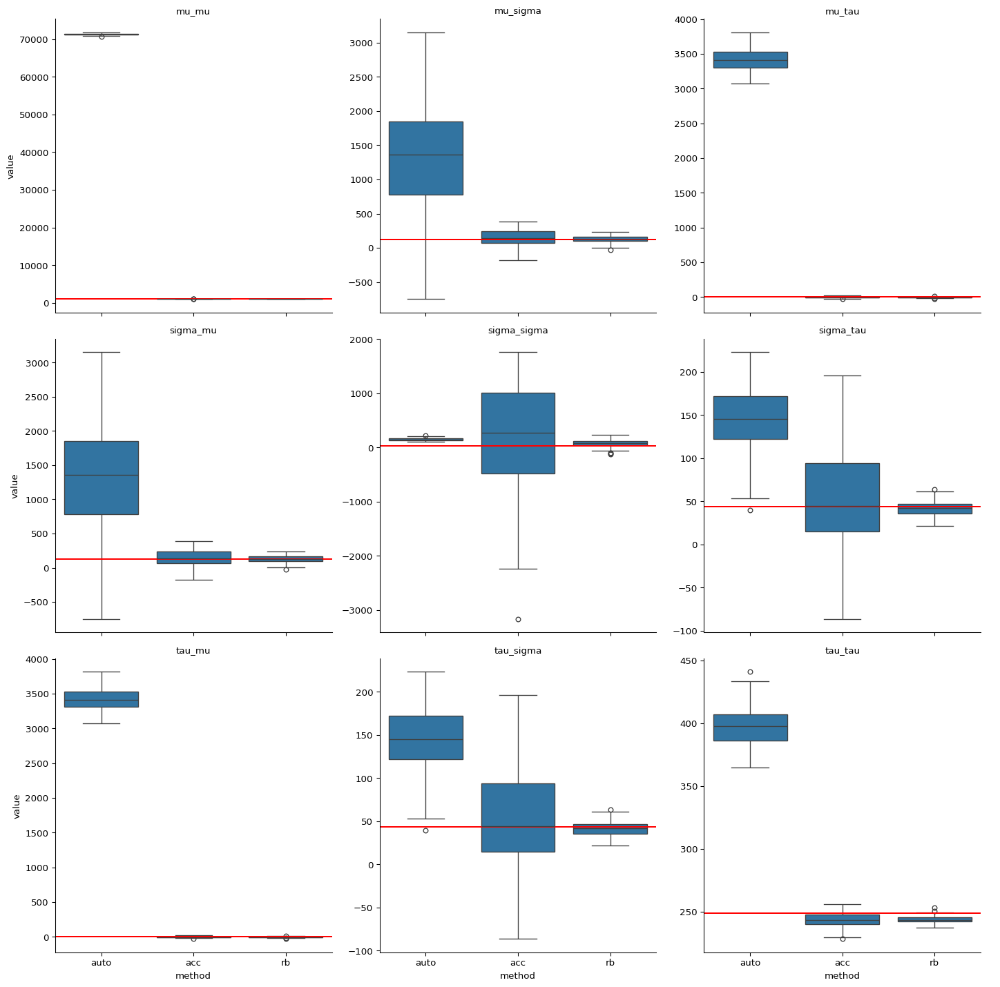
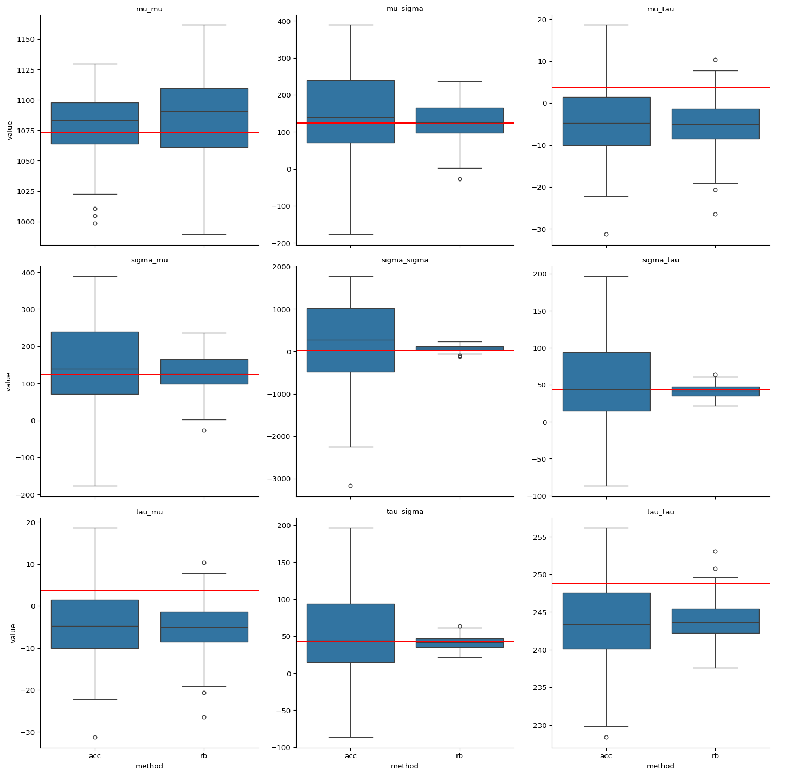

Gradient and Hessian Computations
Martin Lysy 2022-09-15
Summary
In the Introduction tutorial, we saw how to set up a model class for state-space models and how to use PFJAX to estimate the marginal loglikelihood \(\ell(\tth) = \log p(\yy_{0:T} \mid \tth)\). For parameter inference with state-space models, particle filters are useful not only for estimating \(\ell(\tth)\), but also its gradient and hessian functions, \(\nabla \ell(\tth) = \frac{\partial}{\partial \tth} \ell(\tth)\) and \(\nabla^2 \ell(\tth) = \frac{\partial^2}{\partial \tth \partial \tth'} \ell(\tth)\).
This tutorial compares the speed and accuracy of various particle filter algorithms for the latter. Let \(N\) denote the number of particles and \(T\) denote the number of observations. The particle filter based gradient and hessian algorithms to be compared here are:
-
Automatic differentiation through the “basic” particle filter loglikelihood described in the Introduction, i.e., with the \(\operatorname{\texttt{resample}}()\) function given by the multinomial resampler
pfjax.particle_resamplers.resample_multinomial(). This algorithm scales as \(\bO(NT)\) but is known to produce biased results (Corenflos et al. 2021). -
A modified version of the basic particle filter (Cappé and Moulines 2005) of which the bi-product are estimates of \(\nabla \ell(\tth)\) and \(\nabla^2 \ell(\tth)\). This algorithm is unbiased and scales as \(\bO(NT)\), but the variance of the estimates scales as \(\bO(T^2/N)\) (Poyiadjis, Doucet, and Singh 2011). In other words, the number of particles \(N\) must increase at least quadratically with the number of observations \(T\) to keep the variance of the gradient and hessian estimators bounded.
-
A bi-product of the “Rao-Blackwellized” (RB) particle filter developped by Poyiadjis, Doucet, and Singh (2011) (also with multinomial resampling). This algorithm also estimates the gradient and hessian unbiasedly. Its computational complexity is \(\bO(N^2 T)\), but the variance of the gradient/hessian estimates is \(\bO(T/N)\) (Poyiadjis, Doucet, and Singh 2011).
Benchmark Model
We’ll be using a Bootstrap filter for the Brownian motion with drift model defined in the Introduction:
where the model parameters are \(\tth = (\mu, \sigma, \tau)\). The details
of setting up the appropriate model class are provided in the
Introduction. Here we’ll use the version of this model
provided with PFJAX: pfjax.models.BMModel.
Methods to be Added to the Comparisons
-
Automatic differentiation through a particle filter with multivariate normal resampling scheme (Kotecha and Djuric 2003). This resampler, implemented in
pfjax.particle_resamplers.resample_mvn(), calculates the (weighted) mean and variance of the particles at each time \(t\) and samples from the multivariate normal with these parameters. This method is extremely fast and accurate as long as \(p(\xx_{t} \mid \yy_{0:t-1}, \tth)\) is well-approximated by a multivariate normal. It is biased, however, especially when \(p(\xx_t \mid \yy_{0:t}, \tth)\) is multimodal. The MVN resampler should probably be included for comparison, though since \(p(\xx_{t} \mid \yy_{0:t-1}, \tth)\) is exactly Gaussian here its results are likely to be overly optimistic. -
Automatic differentiation through a particle filter with an optimal transport resampling scheme proposed by Corenflos et al. (2021) . This method, implemented in
pfjax.particle_resamples.resample_ot(), is unbiased (at least for large \(N\)) and its computations scale as \(\bO(N^2 T)\). However, the underlying optimal transport algorithm as implemented by the ott-jax package requires careful tuning to be of comparable speed to any of the algorithms 1-3 above.
# jax
import jax
import jax.numpy as jnp
import jax.scipy as jsp
import jax.random
from functools import partial
# plotting
import numpy as np
import pandas as pd
import seaborn as sns
import matplotlib.pyplot as plt
import projplot as pjp
# pfjax
import pfjax as pf
from pfjax.models import BMModel
Simulate Data
# parameter values
# mu, sigma, tau = .1, .2, .1
mu, sigma, tau = 5., .2, 1.
theta_true = jnp.array([mu, sigma, tau])
# data specification
dt = .5
n_obs = 100
x_init = jnp.array(0.)
# initial key for random numbers
key = jax.random.PRNGKey(0)
# simulate data
bm_model = BMModel(dt=dt)
key, subkey = jax.random.split(key)
y_meas, x_state = pf.simulate(
model=bm_model,
key=subkey,
n_obs=n_obs,
x_init=x_init,
theta=theta_true
)
# plot data
plot_df = (pd.DataFrame({"time": jnp.arange(n_obs) * dt,
"x_state": jnp.squeeze(x_state),
"y_meas": jnp.squeeze(y_meas)})
.melt(id_vars="time", var_name="type"))
sns.relplot(
data=plot_df, kind="line",
x="time", y="value", hue="type"
)

Loglikelihood Comparisons
Before checking derivatives, let’s start by comparing the speed and
accuracy of the underlying particle filters, namely, the \(\bO(NT)\)
complexity algorithm of pfjax.particle_filter() and the \(\bO(N^2T)\)
algorithm of pfjax.particle_filter_rb(). Accuracy is assessed visually
using projection plots as described in the Introduction.
Note that both bm_loglik_basic() and bm_loglik_rb() below are
internally vectorized over multiple values of \(\tth\), with each given a
separate random seed.
def bm_loglik_exact(theta, y_meas):
"""
Exact loglikelihood of the BM model.
"""
theta = jnp.atleast_2d(theta)
ll = jax.vmap(lambda _theta: bm_model.loglik_exact(
y_meas=y_meas,
theta=_theta
))(theta)
return jnp.squeeze(ll)
def bm_loglik_basic(theta, y_meas, key, n_particles):
"""
Basic particle filter approximation of the loglikelihood.
"""
theta = jnp.atleast_2d(theta)
subkeys = jax.random.split(key, num=theta.shape[0])
ll = jax.vmap(lambda _theta, _key: pf.particle_filter(
model=bm_model,
key=_key,
y_meas=y_meas,
n_particles=n_particles,
theta=_theta,
history=False,
score=False,
fisher=False
)["loglik"])(theta, subkeys)
return jnp.squeeze(ll)
def bm_loglik_rb(theta, y_meas, key, n_particles):
"""
RB particle filter approximation of the loglikelihood.
"""
theta = jnp.atleast_2d(theta)
subkeys = jax.random.split(key, num=theta.shape[0])
ll = jax.vmap(lambda _theta, _key: pf.particle_filter_rb(
model=bm_model,
key=_key,
y_meas=y_meas,
n_particles=n_particles,
theta=_theta,
history=False,
score=False,
fisher=False
)["loglik"])(theta, subkeys)
return jnp.squeeze(ll)
def bm_loglik_ott(theta, y_meas, key, n_particles):
"""
Optimal transport particle filter approximation of the loglikelihood.
"""
theta = jnp.atleast_2d(theta)
subkeys = jax.random.split(key, num=theta.shape[0])
ll = jax.vmap(lambda _theta, _key: pf.particle_filter(
model=bm_model,
key=_key,
y_meas=y_meas,
n_particles=n_particles,
theta=_theta,
history=False,
score=False,
fisher=False,
)["loglik"])(theta, subkeys)
return jnp.squeeze(ll)
Timing Comparisons
Let’s first jit-compile a simplified version of the loglikelihoods for the projection plots and compare timings.
# jit-compiled exact loglikelihood (timed for reference)
bm_ll_exact = jax.jit(partial(bm_loglik_exact, y_meas=y_meas))
%timeit bm_ll_exact(theta_true)
# jit-compiled basic particle filter
n_particles_basic = 2500
key, subkey = jax.random.split(key)
bm_ll_basic = jax.jit(partial(bm_loglik_basic, y_meas=y_meas,
n_particles=n_particles_basic, key=subkey))
%timeit bm_ll_basic(theta_true)
# jit-compiled RB particle filter
n_particles_rb = 400
key, subkey = jax.random.split(key)
bm_ll_rb = jax.jit(partial(bm_loglik_rb, y_meas=y_meas,
n_particles=n_particles_rb, key=subkey))
%timeit bm_ll_rb(theta_true)
56.2 μs ± 636 ns per loop (mean ± std. dev. of 7 runs, 10,000 loops each)
94.9 μs ± 28.2 μs per loop (mean ± std. dev. of 7 runs, 1 loop each)
The slowest run took 10.08 times longer than the fastest. This could mean that an intermediate result is being cached.
63.9 μs ± 44.2 μs per loop (mean ± std. dev. of 7 runs, 1 loop each)
Projection Plots
# projection plot specification
n_pts = 100 # number of evaluation points per plot
# theta_lims = jnp.array([[-.5, .5], [.1, .4], [.05, .2]]) # plot limits for each parameter
theta_lims = jnp.array([[4.5, 5.5], [.01, .4], [.5, 2]]) # plot limits for each parameter
theta_names = ["mu", "sigma", "tau"] # parameter names
# projection plots for exact loglikelihood
df_exact = pjp.proj_plot(
fun=bm_ll_exact,
x_opt=theta_true,
x_lims=theta_lims,
x_names=theta_names,
n_pts=n_pts,
vectorized=True,
plot=False
)
# projection plots for basic particle filter
df_basic = pjp.proj_plot(
fun=bm_ll_basic,
x_opt=theta_true,
x_lims=theta_lims,
x_names=theta_names,
n_pts=n_pts,
vectorized=True,
plot=False
)
# projection plots for RB particle filter
df_rb = pjp.proj_plot(
fun=bm_ll_rb,
x_opt=theta_true,
x_lims=theta_lims,
x_names=theta_names,
n_pts=n_pts,
vectorized=True,
plot=False
)
#merge data frames and plot them
plot_df = pd.concat([df_exact, df_basic, df_rb], ignore_index=True)
plot_df["method"] = np.repeat(["exact", "pf_basic", "pf_rb"], len(df_exact["variable"]))
rp = sns.relplot(
data=plot_df, kind="line",
x="x", y="y",
hue="method",
col="variable",
col_wrap = 3,
facet_kws=dict(sharex=False, sharey=False)
)
rp.set_titles(col_template="{col_name}")
rp.set(xlabel=None)
rp.set(ylabel="loglikelihood")
# add true parameter values
for ax, theta in zip(rp.axes.flat, theta_true):
ax.axvline(theta, linestyle="--", color="black")

Conclusions:
-
We used 2500 particles for the standard filter but only 400 particles for the RB filter. The latter takes about 5x longer to compute but should have lower variance. In this particular case this does not seem to hold, i.e., the RB filter takes longer and appears to be more variable. This suggests that the primary use of the RB filter is for calculating accurate gradients, as we shall see below.
-
Both particle filters reasonably approximate \(\ell(\tth)\) when \(\mu\) is at its true value. They don’t do as well when \(\mu\) is far from its true value. This is likely due to particle degeneracy in that case.
Gradient Calculations
Here we’ll check the three gradient algorithms:
auto: Automatic differentiation through the multinomial sampler (known to be biased).acc: The “accumulator” method of (Cappé and Moulines 2005) through the basic particle filter (unbiased but high variance).rb: The method of (Poyiadjis, Doucet, and Singh 2011) through the RB particle filter (unbiased and low variance).
For simplicity we’ll just check the gradient estimators at the “true” value of \(\tth\), i.e., the one used to simulate the data. In the code below, we use the term “score” for \(\nabla \ell(\tth)\), which is the technical term for the gradient of the loglikelihood function.
# exact score function
bm_score_exact = jax.jit(jax.grad(partial(bm_loglik_exact, y_meas=y_meas)))
# auto score function
@partial(jax.jit, static_argnums=(2,))
def bm_score_auto(theta, key, n_particles):
return jax.grad(bm_loglik_basic)(theta, y_meas, key, n_particles)
# acc score function
@partial(jax.jit, static_argnums=(2,))
def bm_score_acc(theta, key, n_particles):
out = pf.particle_filter(
model=bm_model,
key=key,
y_meas=y_meas,
theta=theta,
n_particles=n_particles,
score=True,
fisher=False,
history=False
)
return out["score"]
# rb score function
@partial(jax.jit, static_argnums=(2,))
def bm_score_rb(theta, key, n_particles):
out = pf.particle_filter_rb(
model=bm_model,
key=key,
y_meas=y_meas,
theta=theta,
n_particles=n_particles,
score=True,
fisher=False,
history=False
)
return out["score"]
Timing Comparisons
Note here that the number of particles for the basic and RB particle filters was chosen so that the gradient computations take about the same CPU time.
key = jax.random.PRNGKey(0)
n_particles_basic = 2500
n_particles_rb = 100
# check timings
%timeit bm_score_exact(theta_true)
%timeit bm_score_auto(theta_true, key, n_particles_basic)
%timeit bm_score_acc(theta_true, key, n_particles_basic)
%timeit bm_score_rb(theta_true, key, n_particles_rb)
21.6 μs ± 11.9 μs per loop (mean ± std. dev. of 7 runs, 1 loop each)
The slowest run took 6.25 times longer than the fastest. This could mean that an intermediate result is being cached.
92.8 μs ± 77.4 μs per loop (mean ± std. dev. of 7 runs, 1 loop each)
The slowest run took 14.32 times longer than the fastest. This could mean that an intermediate result is being cached.
150 μs ± 190 μs per loop (mean ± std. dev. of 7 runs, 1 loop each)
The slowest run took 17.71 times longer than the fastest. This could mean that an intermediate result is being cached.
66.4 μs ± 104 μs per loop (mean ± std. dev. of 7 runs, 1 loop each)
Accuracy Comparisons
# repeat calculation nsim times
n_sim = 100
key, *subkeys = jax.random.split(key, n_sim+1)
score_exact = bm_score_exact(theta_true)
score_auto = []
score_acc = []
score_rb = []
for i in range(n_sim):
score_auto += [bm_score_auto(theta_true, subkeys[i], n_particles_basic)]
score_acc += [bm_score_acc(theta_true, subkeys[i], n_particles_basic)]
score_rb += [bm_score_rb(theta_true, subkeys[i], n_particles_rb)]
plot_df = (
pd.DataFrame({
"theta": np.tile(theta_names, n_sim),
"auto": np.array(score_auto).ravel(),
"acc": np.array(score_acc).ravel(),
"rb": np.array(score_rb).ravel()
})
.melt(id_vars=["theta"], value_vars=["auto", "acc", "rb"], var_name="method")
)
g = sns.catplot(
data=plot_df, kind="box",
x="method", y="value",
col="theta",
col_wrap=3,
sharey=False
)
g.set_titles(col_template="{col_name}")
[g.axes[i].axhline(score_exact[i], color="red") for i in range(theta_true.size)];

# same thing without auto
g = sns.catplot(
data=plot_df[plot_df["method"] != "auto"], kind="box",
x="method", y="value",
col="theta",
col_wrap=3,
sharey=False
)
g.set_titles(col_template="{col_name}")
[g.axes[i].axhline(score_exact[i], color = "red") for i in range(theta_true.size)];

Conclusions:
-
This confirms that autodiff through the particle filter is biased (in \(\mu\) and \(\tau\)) whearas the other two filters are not.
-
The RB score calculation indeed has lower variance than that of the basic particle filter for \(\sigma\). However, the gradients for \(\tau\) appear to be slightly more biased. One can verify that this bias disappears when the number of particles is increased to about 500.
Hessian Computations
We’ll do this using the same methods as for the score.
In the code below, we use the term Fisher information for \(- \nabla^2 \ell(\tth)\), the technical term for the hessian of the negative loglikelihood.
# exact fisher information
@jax.jit
def bm_fisher_exact(theta):
hess = jax.jacfwd(jax.jacrev(partial(bm_loglik_exact, y_meas=y_meas)))(theta)
return -hess
# auto fisher information
@partial(jax.jit, static_argnums=(2,))
def bm_fisher_auto(theta, key, n_particles):
hess = jax.jacfwd(jax.jacrev(bm_loglik_basic))(theta, y_meas, key, n_particles)
return -hess
# acc fisher information
@partial(jax.jit, static_argnums=(2,))
def bm_fisher_acc(theta, key, n_particles):
out = pf.particle_filter(
model=bm_model,
key=key,
y_meas=y_meas,
theta=theta,
n_particles=n_particles,
score=True,
fisher=True,
history=False
)
return out["fisher"]
# rb fisher information
@partial(jax.jit, static_argnums=(2,))
def bm_fisher_rb(theta, key, n_particles):
out = pf.particle_filter_rb(
model=bm_model,
key=key,
y_meas=y_meas,
theta=theta,
n_particles=n_particles,
score=True,
fisher=True,
history=False
)
return out["fisher"]
Timing Comparisons
key = jax.random.PRNGKey(0)
n_particles_basic = 2500
n_particles_rb = 100
# compare timings
%timeit bm_fisher_exact(theta_true)
%timeit bm_fisher_auto(theta_true, key, n_particles_basic)
%timeit bm_fisher_acc(theta_true, key, n_particles_basic)
%timeit bm_fisher_rb(theta_true, key, n_particles_rb)
20.4 μs ± 11.9 μs per loop (mean ± std. dev. of 7 runs, 1 loop each)
The slowest run took 18.81 times longer than the fastest. This could mean that an intermediate result is being cached.
247 μs ± 376 μs per loop (mean ± std. dev. of 7 runs, 1 loop each)
The slowest run took 9.68 times longer than the fastest. This could mean that an intermediate result is being cached.
120 μs ± 117 μs per loop (mean ± std. dev. of 7 runs, 1 loop each)
The slowest run took 13.57 times longer than the fastest. This could mean that an intermediate result is being cached.
90.5 μs ± 117 μs per loop (mean ± std. dev. of 7 runs, 1 loop each)
Accuracy Comparisons
n_sim = 100
key, *subkeys = jax.random.split(key, n_sim+1)
# repeat calculation nsim times
fisher_exact = bm_fisher_exact(theta_true)
fisher_auto = []
fisher_acc = []
fisher_rb = []
for i in range(n_sim):
fisher_auto += [bm_fisher_auto(theta_true, subkeys[i], n_particles_basic)]
fisher_acc += [bm_fisher_acc(theta_true, subkeys[i], n_particles_basic)]
fisher_rb += [bm_fisher_rb(theta_true, subkeys[i], n_particles_rb)]
theta2_names = np.meshgrid(np.array(theta_names), np.array(theta_names))
theta2_names = np.array(
[theta2_names[1].ravel()[i] + '_' +
theta2_names[0].ravel()[i]
for i in range(theta2_names[0].size)]
)
plot_df = (
pd.DataFrame({
"theta": np.tile(theta2_names, n_sim),
"auto": np.array(fisher_auto).ravel(),
"acc": np.array(fisher_acc).ravel(),
"rb": np.array(fisher_rb).ravel()
})
.melt(id_vars=["theta"], value_vars=["auto", "acc", "rb"], var_name="method")
)
g = sns.catplot(
data=plot_df, kind="box",
x="method", y="value",
col="theta",
col_wrap=3,
sharey=False
)
g.set_titles(col_template="{col_name}")
[g.axes[i].axhline(fisher_exact.ravel()[i], color="red") for i in range(theta2_names.size)];

# same thing without auto
plot_df = (
pd.DataFrame({
"theta": np.tile(theta2_names, n_sim),
"acc": np.array(fisher_acc).ravel(),
"rb": np.array(fisher_rb).ravel()
})
.melt(id_vars=["theta"], value_vars=["acc", "rb"], var_name="method")
)
g = sns.catplot(
data=plot_df[plot_df["method"] != "auto"], kind="box",
x="method", y="value",
col="theta",
col_wrap=3,
sharey=False
)
g.set_titles(col_template="{col_name}")
[g.axes[i].axhline(fisher_exact.ravel()[i], color="red") for i in range(theta2_names.size)];

Conclusions:
- In this case the Rao-Blackwellized filter is the clear winner, in terms of accuracy and precision.
References
Cappé, Olivier, and Eric Moulines. 2005. “On the Use of Particle Filtering for Maximum Likelihood Parameter Estimation.” In 13th European Signal Processing Conference, 1–4.
Corenflos, Adrien, James Thornton, George Deligiannidis, and Arnaud Doucet. 2021. “Differentiable Particle Filtering via Entropy-Regularized Optimal Transport.” In Proceedings of the 38th International Conference on Machine Learning, edited by Marina Meila and Tong Zhang, 139:2100–2111. Proceedings of Machine Learning Research. PMLR. https://proceedings.mlr.press/v139/corenflos21a.html.
Kotecha, J. H., and P. M. Djuric. 2003. “Gaussian Particle Filtering.” IEEE Transactions on Signal Processing 51 (10): 2592–2601. https://doi.org/10.1109/TSP.2003.816758.
Poyiadjis, G., A. Doucet, and S. S. Singh. 2011. “Particle Approximations of the Score and Observed Information Matrix in State Space Models with Application to Parameter Estimation.” Biometrika 98 (1): 65–80. https://doi.org/10.1093/biomet/asq062.